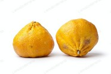

|  | Ugli Fruit also known by proprietary names ugli /ˈʌɡli/ fruit, uglifruit, and uniq fruit, is a citrus fruit that arose on the island of Jamaica through the natural hybridization of a tangerine or orange with a grapefruit (or pomelo), and is thus a tangelo. The original tree is believed to have been a hybrid formed from the Seville orange, the grapefruit and the tangerine families. As a hybrid species, it is usually represented as Citrus reticulata × paradisi. This tangelo was a natural hybrid, having arisen spontaneously like the grapefruit, in Jamaica, where it is mainly grown today. 'UGLI' is a registered trademark of Cabel Hall Citrus Limited, under which it markets the fruit, the name being a variation of the word "ugly", which refers to the fruit's unsightly appearance, with rough, wrinkled, greenish-yellow rind, wrapped loosely around the orange pulpy citrus inside. |